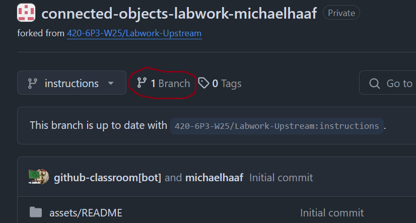
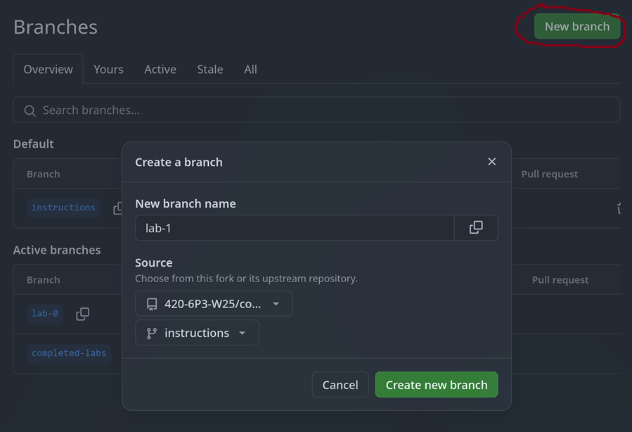

GitHub basics
Basics of cloning a repository hosted on Github and creating branches. Using a personal access token for authentication on GitHub outside of VSCode. Using the pass password manager to store access tokens safely.

1 Overview
These notes cover the basics for using GitHub in this class.
2 Branch management
Almost all of our lab and assignment work will take place on branches.
2.1 Creating a branch using the GitHub website
You can add branches to your repository directly by clicking the “Branches” icon, and then “New Branch” on the subsequent window (screenshots below).
You’ll need the following information:
- New branch name: the lab name (e.g.
lab-0). - Source: the
instructionsbranch from your own repository


2.2 Creating a branch using VSCode
You can create branches within your project using VSCode:
{kind=link}
2.3 Creating a branch using the command line
# make sure you are on the `instructions` branch before proceeding
git status
# the switch command switches branches, -c flag stands for "create"
git switch -c lab-0
# upload your branch to the remote repository
git push -u origin
# ensure your new lab-0 branch is up to date with new remote lab-0 branch
git status3 Authentication
Many git operations require authentication to get permission. Some examples:
- Pushing to a repository
- Pulling from a private repository
- Using GitHub CLI
Since July 2021, GitHub no longer accepts account passwords to authenticate git operations. You have probably run into this error many times when trying to push changes or clone your private repositories on a new machine.
The only reason VSCode works out of the box is because VSCode and GitHub are integrated by default, both being owned by Microsoft.
The following sections gives us more flexible and useful ways to authenticate git commands with GitHub.
3.1 Creating a personal access token
Read “Managing your personal access tokens” on Github, and create a classic (not fine-grained) personal access token.
At the very least, select the repo scope – this will give your token the ability to authenticate using git on the CLI. You can select all other scopes as well if you like.
Once you’re finished, you’ll see your token is a string of the following form:
ghp_<long string of letters and numbers>Keep this window open – the string of characters will disappear as soon as you refresh the page.
We need to configure a secure storage location for this string. For this, we will use the tool pass.
3.2 Using a password manager to store your token
Secrets like personal access tokens need to be readily accessible to be useful – but they also should be secret, so that others cannot easily impersonate you using the token.
A common method for managing secrets is to use a password manager. In our course we use pass to securely manage our personal access tokens on our developer environment.
3.2.1 Install pass dependencies
First, ensure pass and some useful related dependencies are installed:
# On WSL / Linux
sudo apt install pass pass-extension-otp zbar-tools
# On macOS
brew install pass pass-otp zbar3.2.2 Set up gpg
pass works by using asymmetric key encryption to store secrets. That means: you posess the private key that can decrypt secrets, and you make the public key available which can encrypt secrets.
This scheme is not only useful for private communication (something similar is used by apps like Signal and Telegram), but also for storing any secrets – for us, we will store our github token as a secret.
To get started, you’ll need to generated a gpg key-pair in order to use pass.
The GitHub instructions mention using git bash – ignore them, you have a developer environment to use instead.
In general, when I link to external instructions, you will need to pay attention to what parts of them may be different in our class. This is a good skill in general for making effective use of resources posted online when learning a new skill.
Follow the instructions below:
- Create the gpg key-pair following the instructions on GitHub: Generating a new GPG key
- run
gpg --full-generate-keyto get started. - Recommended: You can accept the default key type (RSA)
- Recommended: Choose 4096 bits for the keysize.
- Recommended: You can accept the default “does not expire” option.
- Enter user ID information. This information should match what you have provided to GitHub already (username/email address)
- You have to choose a password for GPG keys. Choose something strong that you can remember.
- Add the public key to your GitHub account following the instructions: Adding a GPG Key to your GitHub account.
The name of the key on GitHub does not matter (Personal GPG Key is fine)
The command: gpg --armor --export prints your key to the console, you can copy/paste this output for GitHub
Even better: use a pipe to clip.exe to put the key in your clipboard automatically with gpg --armor --export | clip.exe
- on macOS: use
pbcopyinstead ofclip.exe - on Linux: use
xcliporwl-copyinstead ofclip.exe
3.2.3 Store personal access token in pass
Once you’ve created the gpg key-pair, we can now set up pass:
pass init <the-email-you-used-for-gpg-key>Finally, copy the token string from GitHub to your clipboard. Then, open your developer terminal:
$ pass insert github/token
Enter password for github/token: # paste your token here, then press enterOnce you’ve done this, you should be able to access your token using pass github/token, or pass github/token | clip.exe to place it on your clipboard directly.
3.3 Troubleshooting
Some common errors that arise with using gpg:
3.3.1 No secret key
This error looks like:
bash
$ pass github/token
gpg: decryption failed: No secret keyTry the following:
3.3.1.1 Double check the password store setup
Confirm that your password store is encrypted with the gpg key you expect:
bash
# This command prints out your gpg key information
$ gpg -k
# This command shows the gpg key used to encrypt your password-store
$ cat ~/.password-store/.gpg-id
# The id and/or email address should match for both!3.3.1.2 Restart gpg daemon
bash
$ gpgconf --kill gpg-agentIf that doesn’t work, try restarting your WSL instance. In powershell:
Powershell
PS > wsl --shutdown <distro-name>After the shutdown attempt, retry using pass in the WSL again.
4 Repository management
4.1 Troubleshooting
4.1.1 Method 1
# Adapted from: https://stackoverflow.com/a/40098509
# Delete the corrupted .git/objects
find .git/objects/ -size 0 -exec rm -rf {} \;
# Might need to do this?
# git symbolic-ref HEAD refs/heads/master
# Update the git repository
git fetch4.1.2 Method 2
# Adapted from: https://stackoverflow.com/a/18238322
# Delete the corrupted .git folder
$ rm -fr .git
# Create a new .git folder
$ git init
# Add your GitHub repository as the "origin" remote
$ git remote add origin [your-git-remote-url]
# Update the .git folder to have the latest changes from remote
$ git fetch
# Keep your current changes, but set your git reference to your working branch
$ git reset --mixed origin/<branch-name>
# Ensure you're on the correct branch
$ git switch <branch-name>